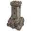
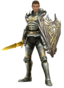

- 
- 
MAXENCE CARPENTIER
GAME DEVELOPMENT ENTHUSIAST
Passionate about video games since my childhood, I always had this dream of making it my job! What excites me in this area is the creation of a universe, a unique experience that brings real immersion to players and makes them travel.
ABOUT ME
From an early age, I have been passionate about video games and I have always dreamed of working in the development of these. I am therefore delighted to be able to apply to join your company, which is one of the largest and most prestigious in this field.
Graduated with a Master's degree in computer science specialized in A.I & Data at Epitech Lille, I developed during my studies a solid expertise in C++, as well as a good knowledge of many other programming languages. I also had the opportunity to participate in several team game development projects, which allowed me to develop my skills in teamwork and project management.
In my spare time I'm into guitar and my favorite game genre is survival and combat simulators like DayZ, Escape From Tarkov, Rust and many more!
Beware The Outbrake (WIP)
After several months of learning Unreal Engine, I'm starting my first real big project: A game halfway between Escape From Tarkov and DayZ. Find an open-world map inspired by French Flanders. Survive, fight with a more realistic system than ever, find, improve and defend your base against the enemy, carry out missions for smugglers and other post-war godfathers. A unique and immersive experience centered on the player experience.
[WORK IN PROGRESS | December 2022 - ?]
RPG (2018)
Realized during my schooling at Epitech, this project aimed to make a small RPG in C/CSFML. This project made me understand the importance of good teamwork on larger projects in a limited time. The game features several simple quests, 3 biomes with different monsters, a stats, leveling and looting system (with three different classes of equipment), etc...